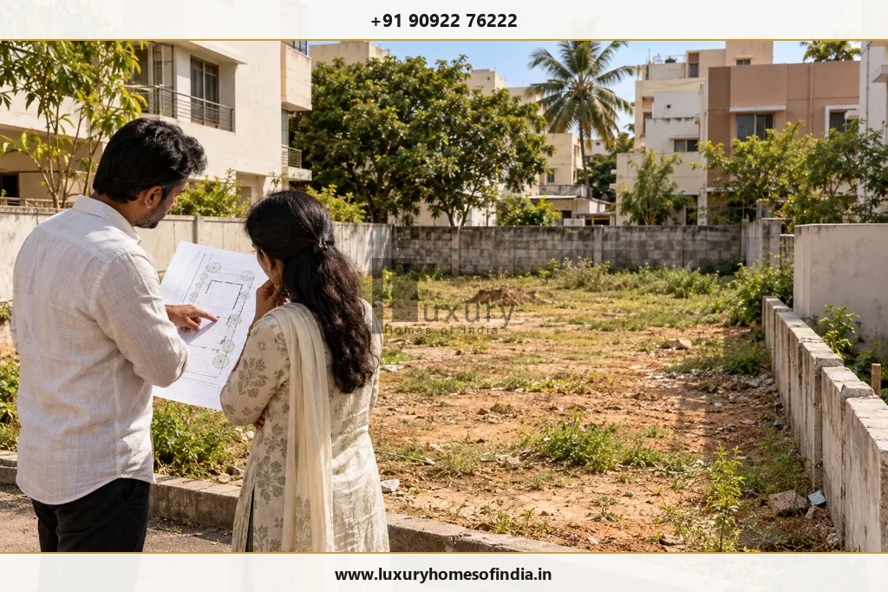
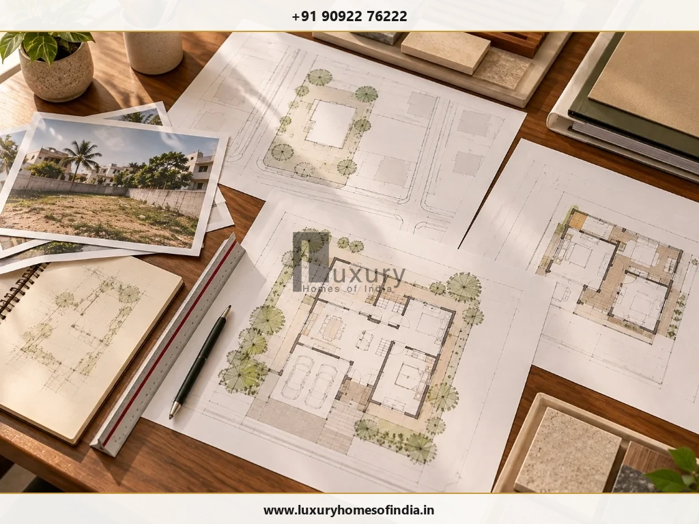
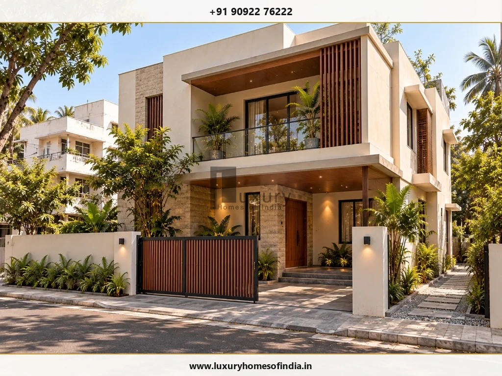

Planning to build a house or luxury villa in Tamil Nadu? The Tamil Nadu Single Window Portal for Planning Permission provides an online route for submitting building and planning permission applications, paying applicable fees and following the approval process.
The correct application route depends on your property's location, land-use classification, proposed building, and the rules applicable to the site. For eligible residential proposals, Tamil Nadu also provides a self-certification route subject to specific conditions, including plot area, built-up area, floor configuration, dwelling units and site eligibility.
Before finalising architectural drawings, verify the land records, permitted development, road access and relevant restrictions. This guide explains the application process, commonly required documents, self-certification considerations and design checks that can help homeowners prepare for approval. For a luxury residence, the essential first step is to establish what can legally and practically be built on the plot—not to finalise the design and check compliance later.
1. What Is Tamil Nadu's Single Window Building Permit System?
Tamil Nadu's Single Window Portal for Planning Permission brings relevant planning and building permission services into an online application system. Government material describes its integration of authorities and local bodies, including the Directorate of Town and Country Planning (DTCP), Chennai Metropolitan Development Authority (CMDA), Greater Chennai Corporation (GCC) and participating local bodies.
The portal supports the submission and processing of relevant applications, document uploads, fee payments and associated approval workflows. The exact service available depends on the application category and the authority responsible for the property.
Official State Planning Portal
Official digital gateway for planning permissions and building plan applications across Tamil Nadu:
Tamil Nadu Single Window Portal for Planning Permission (onlineppa.tn.gov.in) →Before applying, confirm the property's jurisdiction and select the appropriate service. An online application route does not mean that every building is subject to the same eligibility criteria or approval procedure.
2. Who Needs Building Permission in Tamil Nadu?
Anyone planning construction or development should establish which statutory permissions apply before beginning work. Depending on the property and proposed development, the relevant route may cover:
- An independent house or villa.
- A multi-storey residential building.
- An apartment or other residential development.
- A commercial or mixed-use building.
- An addition, alteration or revised proposal requiring approval.
- Other development activities regulated by the applicable rules.
The appropriate approval pathway depends on factors such as the site's location, land use, plot dimensions, proposed built-up area, floor configuration, access and applicable development regulations. A plot in Chennai's metropolitan planning area may follow a different route from a property in a municipality, town panchayat or village panchayat elsewhere in Tamil Nadu.
Before Designing Your Residence:
Confirm the competent authority, permitted land use and applicable development rules for the specific property. Do not assume that an approval route available for one locality or building type applies to another.

3. Tamil Nadu Self-Certification Building Approval: Eligibility and Limitations
Tamil Nadu's published self-certification framework provides a simplified route for qualifying residential building proposals. The area limits are only part of the eligibility test.
Under the published framework, qualifying proposals must satisfy the following principal conditions:
| Eligibility Factor | Published Framework Limit |
|---|---|
| Plot area | Up to 2,500 sq. ft. (approx. 232.25 sq. m.) |
| Built-up area (FSI Area) | Up to 3,500 sq. ft. (approx. 325.15 sq. m.) |
| Floor configuration | Ground floor or ground floor plus one upper floor (or stilt plus two floors under G.O. Ms. No. 118) |
| Dwelling units | Up to two residential units |
| Plot eligibility | Must fall within the approved or regularised categories specified by the applicable rules |
| Site restrictions | Exclusions and mandatory statutory conditions apply (water bodies, CRZ, road alignments) |
The published amendment identifies eligible plot categories and excludes certain restricted areas and land-use categories. Applicants must consult the applicable consolidated rules and current portal requirements before relying on the scheme.
Statutory Reference on Self-Certification
Read the initial framework notification introducing simplified building permissions in Tamil Nadu:
G.O. Ms. No. 133, dated 18 July 2024: Self-Certification Building Regulations →Does every house below these limits qualify?
No. Plot area, built-up area and floor configuration do not independently establish eligibility. Plot status, land use, location, site restrictions and the other prescribed conditions must also be checked.
A large luxury villa, an apartment project or a proposal with additional floors may need to follow another approval route. The term “luxury villa” does not itself determine eligibility.
Self-certification should not be interpreted as a blanket exemption from applicable building regulations. Verify the current requirements before choosing the route.
4. Documents Required for a Building Permit
Prepare the documents required for the specific application before submitting it. The exact checklist can vary by authority, application category and property circumstances. Commonly relevant records include:
| Document or Information | Why It Matters |
|---|---|
| Sale deed, lease deed or ownership document | Establishes the applicant's registered title and legal interest in the property. |
| Patta, Chitta, TSLR or revenue land records | Supports statutory verification of revenue land particulars and ownership records. |
| FMB sketch or town survey record | Helps establish official survey boundaries, sub-division extents, and site dimensions. |
| Encumbrance certificate (EC) | Supports examination of registered encumbrances, sales history, and clean title. |
| Site plan and proposed building drawings | Describes the plot footprint, setbacks, room heights, sections, and proposed development. |
| Registered professional's details and certification | Supports technical scrutiny under Council of Architecture or registered engineer rules. |
| Previous approved plan (where relevant) | Helps establish the approval history for reconstruction, revised, or altered proposals. |
| Applicable declarations, indemnity certificates and NOCs | Addresses statutory indemnities, fire NOC, structural stability, or watercourse buffers. |
Additional records may be necessary depending on the site. For example, the Greater Chennai Corporation's published checklist identifies structural stability documentation and certain conditional clearances, including fire-service and metro-related NOCs where applicable. Watercourse proximity and other site conditions can also affect documentation requirements.
Greater Chennai Corporation (GCC) Planning Guidelines
Review GCC's published building permit document checklists and departmental instructions:
GCC Town Planning Department: Building Permit Checklist & Information →
5. How to Apply Through the Single Window Portal
The exact workflow may differ by application type and competent authority. Use the following 10-step sequence as a preparation guide and follow the live portal's instructions:
- Step 1: Verify the plot and ownership records. Check the ownership documents, survey details, boundaries, access and permitted land use. Resolve material discrepancies before submitting the application.
- Step 2: Confirm the approval route. Identify the competent authority (GCC, CMDA, DTCP, or Panchayat) and determine whether the proposal requires standard building permission, qualifies for self-certification or falls under another special category.
- Step 3: Engage an appropriately registered professional. Select an architect or licensed surveyor authorised for the relevant application category. The professional can help prepare drawings, assess compliance and compile technical documentation.
- Step 4: Prepare the architectural drawings. Ensure that the proposed plans accurately represent the plot and building. Assess the design against applicable setbacks, permitted floor area, height, access and other development requirements.
- Step 5: Register or sign in to the official portal. Open the Tamil Nadu Single Window Portal and follow applicant registration and profile creation instructions.
- Step 6: Select the correct application category. Choose the service that matches the proposed development. Do not select self-certification solely because the plot and built-up areas appear to fall within the stated limits.
- Step 7: Submit the prescribed information and documents. Upload the required land records, drawings, declarations, professional details and any other supporting documentation in the formats specified by the portal.
- Step 8: Review and pay the applicable fees. Check the assessment or fee demand generated for the application. Pay through the prescribed payment gateway and retain the receipt and application reference number.
- Step 9: Monitor the application. Track the application status online and respond to requests for clarification, corrections or additional documentation through the prescribed query-resolution process.
- Step 10: Verify the permission before construction. Review the issued permission, approved drawings, conditions and other relevant particulars. Ensure that the site construction team works strictly from the correct approved version.
Critical Compliance Rule:
An application acknowledgement, submission receipt or fee payment is not, by itself, proof that the required permission has been granted. Never break ground before obtaining the sanctioned planning permit and building licence.
6. How Long Does Building Approval Take?
There is no single processing time that should be assumed for every application in Tamil Nadu. The timeline depends on the approval category, completeness of the submission, technical scrutiny, property-specific restrictions, required clearances and any corrections requested by the authority.
To prepare a more complete application and avoid administrative lag:
- Resolve discrepancies in land and ownership records before uploading.
- Verify the permitted land use under the applicable Master Plan.
- Coordinate the architectural drawings strictly with development control regulations.
- Confirm which external departmental clearances (Fire, Metro, PWD, NHAI) are required.
- Monitor official portal notifications and respond promptly to departmental queries.
If you need to plan a construction start date, use the current service conditions applicable to the specific application rather than relying on a general online estimate.
7. Building Permit Fees in Tamil Nadu
Building permission fees depend on the application category and applicable statutory charges. Depending on the proposal, the assessment may include scrutiny fees, licence fees, development charges, infrastructure and amenities (I&A) charges, or regularisation fees.
Do not rely on an unofficial flat fee for all homes or assume that two properties with similar built-up areas will have identical charges.
For a property-specific estimate:
- Identify the correct authority and application category.
- Enter the required property and proposed building details on the portal calculator.
- Review the official fee assessment or current notified fee schedule.
- Check whether additional clearances or statutory utility infrastructure charges apply.
- Retain the payment receipt and assessment order for your project accounting records.
8. Common Reasons for Application Objections or Delays
An online process can reduce administrative friction, but it does not eliminate the need for accurate information and compliant drawings.
- Inconsistent property records: Differences between ownership documents, revenue patta particulars and actual site dimensions can complicate verification.
- Incorrect land-use assumptions: A plot's physical appearance or surrounding residential development does not establish that a proposed use is permitted under the zoning plan.
- Non-compliant architectural drawings: Plans that fail applicable setback, height, road access, floor-area (FSI) or ventilation requirements will trigger revisions.
- Missing supporting documents: Incomplete applications require further submissions before technical scrutiny can proceed.
- Unchecked site constraints: Road widening alignments, water bodies, channels, high-tension lines, and restricted coastal zones (CRZ) directly impact feasibility.
- Delayed responses to official queries: If clarification or revised documentation is requested, slow applicant responses can prolong the process by months.
A coordinated review of land records, site conditions and architectural drawings before submission can help eliminate avoidable errors.
9. What Luxury-Home Owners Should Check Before Finalising the Design
For a bespoke villa, approval readiness should be an integral part of early design development. The objective is to understand the property's constraints before committing to a detailed architectural scheme.
- Plot feasibility: Verify property boundaries, survey records, public road width access, and applicable land-use classification.
- Buildable area & FSI: Establish the permissible Floor Space Index (FSI) and plot coverage parameters before finalising internal floor plans.
- Setbacks and height: Allow for mandatory front, rear, and side setbacks when planning the building footprint, room layouts, cantilevers, and upper floors.
- Special site conditions: Investigate relevant watercourse buffers, street widening reservations, environmental restrictions, or heritage zones.
- Architectural and engineering coordination: Coordinate the building design with structural requirements, drainage gradients, rainwater harvesting, and MEP utility routings.
- Features that affect site planning: Basements, swimming pools, extensive double-height verandahs, large cantilevers, and rooftop structures should be evaluated against building rules rather than assumed to be permissible.
- Approval strategy: Confirm the appropriate application route and the statutory responsibilities of the owner, registered professional, and competent planning authority.

10. Can You Start Construction After Submitting the Application?
No. Submitting an application does not automatically authorise construction.
Begin work only when the applicable legal requirements have been satisfied and the required permission has been validly issued, or when a specifically applicable statutory mechanism has been completed in accordance with its rules.
Where self-certification is available, confirm that the proposal is eligible and that the prescribed process has been completed. Do not treat an acknowledgement or payment receipt as a substitute for the required authorisation.
Before site mobilisation:
- Check the final permission and approved drawings issued by the local authority.
- Confirm any conditional endorsements that must be satisfied during foundation or plinth stages.
- Brief the architect, structural engineer and general contractor on the approved scope.
- Keep laminated copies of the sanctioned plans accessible at the site office.
- Review proposed design alterations before implementing them on site.
Unapproved deviations may create severe enforcement, financial, demolition, and completion certification risks.
Planning a Bespoke Luxury Home in Chennai or Tamil Nadu?
Establish your plot's buildable envelope, setback compliance, and statutory approval roadmap before committing to detailed architectural drawings.
Book a Technical Planning Consultation11. Frequently Asked Questions
Conclusion: Plan Approval Before You Build
Tamil Nadu's Single Window Building Permit system provides an online route for relevant planning and building permission applications. A well-prepared submission still depends on accurate land records, an appropriate application category, compliant drawings and a clear understanding of the regulations that apply to the property.
For a luxury residence in Chennai or elsewhere in Tamil Nadu, start with a plot-feasibility review before finalising the architectural design. This helps establish the buildable envelope, identify site constraints and coordinate design decisions with the applicable approval process.
Luxury Homes of India focuses on luxury-home design and construction planning. If you are assessing a plot or preparing for a bespoke residence, discuss the project's site conditions, design objectives and planning requirements before moving into detailed design.
Official Sources for Homebuyers & Builders
Disclaimer: This article is for general informational purposes and is not legal, architectural or regulatory advice for a specific property. Rules, eligibility criteria, fees and procedures may change. Verify the current applicable government rules and portal instructions before applying or commencing construction.